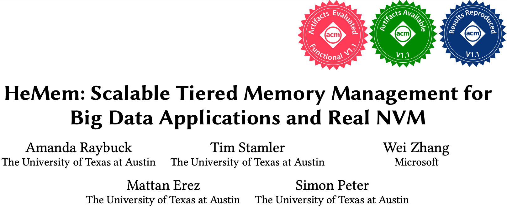

HeMem 링크
개요

- SOSP (Symposium on Operating Systems Principles) 2021 년도에 소개된 HeMem 논문을 읽고 정리해 보자.
Abstract
- NVM (Non-Volatile Memory) 가 Tiered Memory Architecture 에서 새로운 tier 로서 사용되고 있다고 한다.
- 여기서 NVM 은 흔히 NVMe 로 대표되는 SSD 보다는
- Intel Optane Memory 와 같은 PMEM (Persistent Memory) 을 말한다.
- 즉, 기존의 SSD 처럼 block interface 가 아닌 byte-addressable 한 NVM device 를 말하는 것.
- 이렇게 함으로써 memory capacity 는 8 배나 향상시킬 수 있지만, 제대로 사용하지 않으면 BW 를 7 배나 낮출 수 있고 latency 는 63% 나 증가시킬 수 있다고 한다.
- 가령 Intel Optane NVM 와 big data application 을 기존의 tiered memory management system 에서 사용해 보며 지금까지 나온 system 들은 application performance 를 최대로 이끌어내지 못하고 있다고 한다.
- 따라서 본 논문에서는 HeMem (Heterogeneous Memory) 을 제시한다.
- 여기서는 실제 device (즉, Intel Optane NVM) 를 big data application 에서 사용하기 위한 userspace library 를 from-scratch 로 디자인하고 구현했다.
- HeMem 의 주요 특징은
- Asynchronous 하게 작동하며 memory access tracking, migration, 그리고 TLB sync overhead 를 관리한다.
- 그리고 CPU event 를 이용해 memory access 를 sampling 하여 access tracking 을 한다.
- 이것은 page table scan 을 하는 기존의 access tracking 에 비해 훨씬 효율적이다: memory capacity 가 커져서 page table 의 크기가 커질수록 이 access tracking 의 overhead 도 커지기 때문.
- 따라서 CPU event 로 access tracking 하는 방식을 이용하게 되면 당연히 page table scan 을 할 필요가 없기 때문에 memory capacity 를 늘리는 것도 자유로워지고, access tracking 에 필요한 자원도 적다.
- 또한 이로 인해 자주 접근되지만 크기는 작은 (그리고 아마도 임시적인) 데이터는 fast memory 에 배치하고 NVM 의 부족한 BW 는 access pattern 에 따라 효율적으로 분배하는 것이 가능하다고 한다.
- 마지막으로 HeMem 은 user-level library 로 구현되어있기 때문에 user-level 에서 application 이 직접 memory management policy 를 적용하는 것도 가능하다.
- Intel Optane NVM 으로 실험을 한 결과, 지금까지의 OS 혹은 PL 기반의 접근 방식에 비해 훨씬 더 성능이 좋았다고 한다.
- Graph processing benchmark 에서는 50% 의 실행시간이 감소하였고
- TPC-C benchmark 로 Silo 를 돌렸을 때는 throughput 이 13% 정도 늘었으며
- KV store application 에 대해서는 Tail latency 가 16% 나 줄었고
- NVM wear 은 10배나 감소했다고 한다.
목차
#draft Partial-ready 상태입니다.